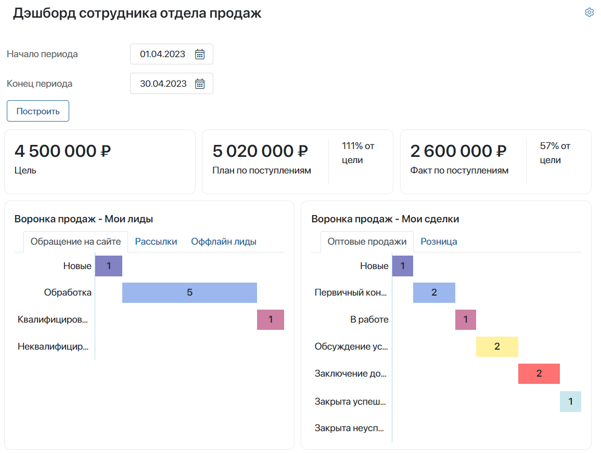
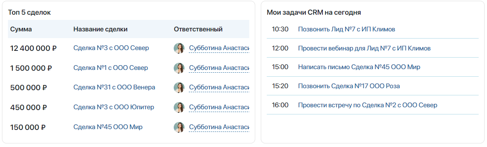

Sales rep dashboard allows users responsible for sales to view information about leads and deals assigned to them. They also help track CRM tasks assigned to the user.
Informative charts and lists show data from the following the Leads and Deals apps. With this tool, a sales rep can see:
- A chart with the Allocation of Leads/Deals by Employee widget. It shows deals from different pipelines grouped by status.
- The CRM Tasks report. It shows how efficiently the employee finishes tasks associated with leads and deals they work with.
- The Top 5 Deals list shows deals with the largest budget that the user is working with.
- A list of CRM tasks planned for the current date.
Page customization
In the dashboard, each report is shown within a separate widget placed on the page. Administrators can configure the page to suit your company’s needs:
- Change the widgets’ settings, for example, determine the number of deals included in the top deals widget or the number of CRM tasks in the list, exclude deals or leads in final statuses from the statistics, etc.
- Rearrange widgets on the page.
- Add the same widget several times to break down the data by different attributes.
- Delete charts that show statistics irrelevant for your company.
- Place additional widgets on the page.
Read more about widgets on the page in Sales rep and sales manager dashboard widgets. To learn more about customizing pages in the interface designer, see Add a widget to a page.
Note that if you changed the page’s settings, the dashboard’s charts may be displayed as one widget. In this case, place separate widgets on the dashboard’s page manually. Read more about this in the Use dashboard widgets on custom pages.
How to read the reports
The reports show information about the leads and deals, assigned to the user that were created during the current month.
To view data for a different period, change the dates at the top of the page and click Show.

Sales Pipeline: My Leads / My Deals
The chart provided by the Allocation of Leads/Deals by Employee widget shows the number of leads or deals in different statuses assigned to the current user. They are divided by pipeline.
You can view data on different pipelines by switching to different tabs above the chart.

CRM Tasks
The CRM tasks for deals/leads widget shows data on CRM tasks assigned to the current user in the My Leads and My Deals charts.
All tasks in the reports are divided into sections:
- Scheduled. Tasks that are not overdue. They can be associated with any deals or leads.
- No activity. Deals or leads with no active tasks associated with them.
- Overdue. Number of tasks associated with any deals or leads that weren’t completed on time.
Under each section, you can see the percentage showing how the number of tasks in it corresponds with the total number of tasks.

Top 5 Deals
The Top deals widget shows the most profitable deals that the current user is working on. Deals are compared based on the amount specified on their pages, in the Budget field.
Click on a deal’s name in the list to open it and view its data.
My CRM Tasks for Today
The CRM tasks for today widget shows calls, emails, meetings, and webinars assigned for the current date. The employee can click a task’s name to open the lead, deal, or company that the task is associated with.
Found a typo? Select it and press Ctrl+Enter to send us feedback